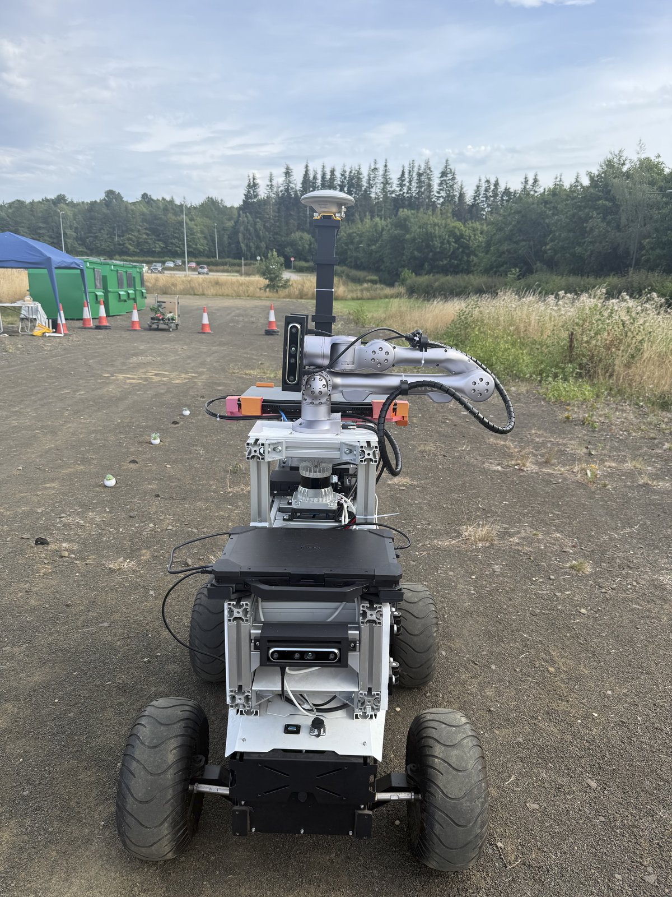
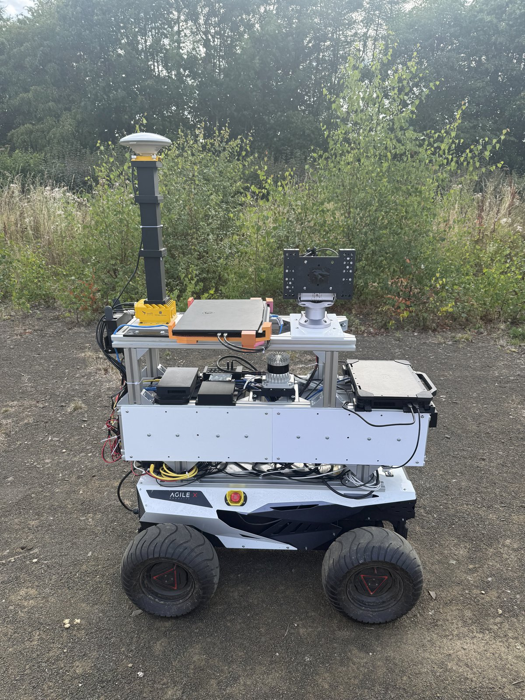

ROWCAST
ALFRED 2.0 stars in autonomous crop row monitoring.


Full scene splats
The first two scenes, each reconstructed as a splat and played back as a camera flythrough: one of large plants, one of small plants.
Individual splats
Large plants
Small plants
More to come: further scenes and reconstructions, and the full webpage closer to publication.